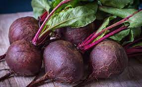
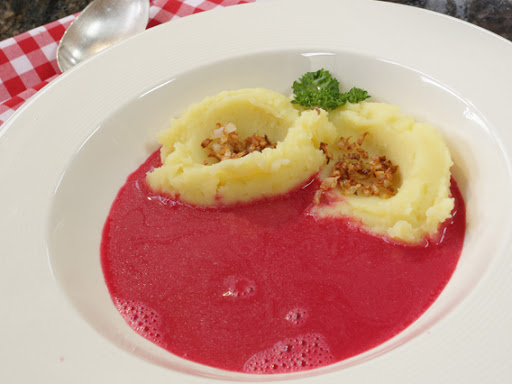

Barszcz czerwony z ziemniakami.
Składniki
- 1,5 kg buraków czerwonych
- 2 ząbki czosnku
- 4 łyżki cukru
- 2-3 łyżki octu
- 4 ziarna ziela angielskiego
- 1 duży liść laurowy
- 1 śmietana kwaśna 18%
- sól
- pieprz
- 2,5 litra wody
- majeranek
- ziemniaki dowolna ilość
- skwarki z boczku,lub kiełbasy przesmażone z cebulką
- zielony koperek
Buraki obrać, umyć, pokroić w kawałki,z alać wodą, dodać listek ziele, czosnek, sól, cukier, gotować 20 min.
Po tym czasie,wlać ocet i gotować jeszcze 15 min.
Odstawić barszcz na 1 godz żeby nabrał kolorku i smaku.
Śmietanę, rozrobić z barszczem i wlać do garnka, doprawić pieprzem.
Ugotować ziemniaki, utłuc, wyłożyć na talerz, posypać skwarkami i koperkiem, z boku wlać barszcz.
|  |
 |
| fot. Świerze buraki |
fot. Barszcz zabielany z ziemniakami |
Źródła: http://mojehobbi.pl/gotowanie-dla-niektorych-to-prawdziwe-hobby-i-pasja/ https://www.winiary.pl/przepisy/barszcz-czerwony-czysty/?gclsrc=aw.ds&gclid=Cj0KCQjw1PSDBhDbARIsAPeTqrdDU-gjsfgpPJQPGuhcGblDDzk9Eyl5sSXYBeuPDDCVKREI3yu6m3waAv79EALw_wcB&gclsrc=aw.ds https://www.kwestiasmaku.com/przepisy/salatki-z-kurczakiem https://www.marta-gotuje.pl/mac-and-cheese-przepis/ https://stylzycia.radiozet.pl/Kuchnia/Kurczak-curry-z-ryzem-sprawdzony-przepis-24135 https://www.kwestiasmaku.com/kuchnia_polska/nalesniki/nalesniki.html http://rpo-przemyska.pl/gotowaniee.html https://michalwrzosek.pl/przepisy/kurczak-w-kremowym-sosie-curry/